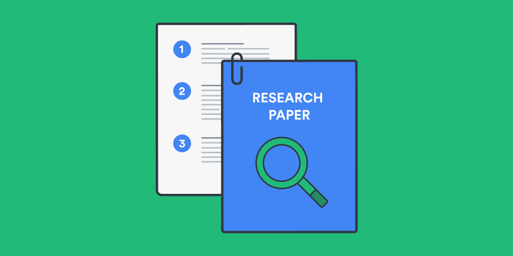
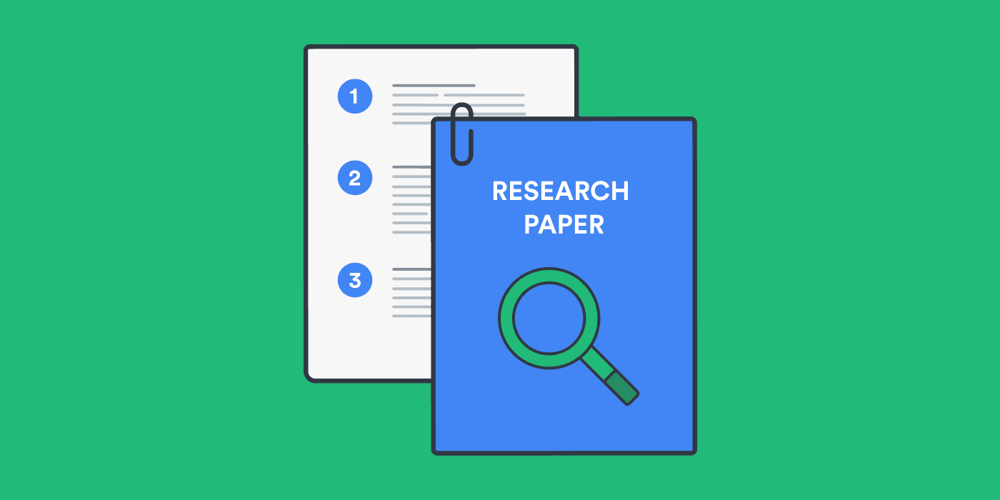

CAPTCHAs (Completely Automated Public Turing test to tell Computers and Humans Apart) were created to protect websites from bots by verifying that the user is a real human. They serve as gatekeepers to prevent spam, abuse, and automated attacks.
Security: Prevents automated attacks and spam.
User Verification: Differentiates humans from bots using interactive challenges.
Evolution: Has evolved from simple text tests to sophisticated image and behavioral analysis.
"CAPTCHAs help protect websites from spam, brute force attacks, and other automated threats while ensuring that genuine users can access services seamlessly."
Developed in the early 2000s, CAPTCHAs have transformed significantly. However, this evolution has often compromised accessibility for users with disabilities. Our project delves into these challenges and explores innovative solutions that balance robust security with improved accessibility.
Why This Matters
CAPTCHAs are everywhere—but traditional implementations often impose significant challenges for individuals with disabilities. It’s crucial that everyone can navigate the digital world without barriers.
Paid CAPTCHA Solvers
Some services pay humans minimal wages to solve CAPTCHAs, essentially turning them into a mechanical task rather than a security measure. This practice defeats the original purpose of CAPTCHAs entirely.
Key Aspects of Our Research
Current Challenges
Traditional CAPTCHAs pose various accessibility challenges for users with visual, auditory, cognitive, and motor impairments.
AI Limitations
Although AI is advancing rapidly, it has inherent limitations that can be leveraged for more accessible security measures without relying on traditional CAPTCHA tests.
Better Alternatives
Our research explores emerging alternatives like behavior-based detection, cryptographic puzzles, and contextual analysis to improve accessibility while ensuring security.
Screen readers cannot interpret distorted text or images.
Low vision users struggle with low contrast and distortion.
Color blindness affects element differentiation.
Audio alternatives often contain distracting background noise.
Over 77% of visually impaired users report difficulties with image-based CAPTCHAs.
Auditory Impairment Challenges
Audio CAPTCHAs can be problematic:
Deaf or hard-of-hearing users cannot access audio challenges.
Background noise reduces clarity even for mild hearing loss.
Distorted sounds make comprehension difficult.
Users with both visual and hearing impairments are doubly affected.
Studies show audio CAPTCHAs can take up to 3x longer to complete with a higher failure rate.
Cognitive Challenges
Complex instructions and time limits create significant barriers:
Users with dyslexia or learning disabilities struggle with distorted text.
Logic puzzles can be overwhelming.
Switching between tasks increases cognitive load.
Research indicates up to a 50% higher failure rate for users with learning disabilities.
Motor Impairment Challenges
Interactive CAPTCHAs pose unique challenges for users with motor impairments:
Drag-and-drop puzzles and small clickable areas require precise control.
Timed or rapid-response tasks further increase difficulty.
Incompatibility with assistive technologies (keyboard-only operation, on-screen keyboards, etc.) can lock out users.
Behavior-based verifications may flag atypical movement patterns as suspicious.
These factors combine to significantly increase frustration and failure rates among motor-impaired users.
Note: Even if a user with motor impairments manages a visual challenge, the cognitive and physical burden is much higher.
Sources: Stanford How Good are Humans at Solving CAPTCHAs?; A study on Accessibility of Google ReCAPTCHA Systems (Gaggi, 2022); CAPTCHA: Impact on User Experience of Users with Learning Disabilities (Ruti Gafni and Idan Nagar)
Summary Metrics
Metric
General Users
Users with Disabilities
Average Time per CAPTCHA
~32 seconds
Longer (varies)
Visual CAPTCHA Success Rate
~90%+
Lower if motor tasks are required
Audio CAPTCHA Success Rate
~50%
~46%
CAPTCHA Limitations & Global Impact
Security vs. Accessibility Tradeoffs
More secure CAPTCHAs tend to be less accessible.
Simplified CAPTCHAs are easier but less effective.
Modern approaches can overcome this false dichotomy.
Equal access is mandated by law in many countries.
Privacy Concerns
CAPTCHAs can track user behavior across sites.
Data may be used for marketing purposes.
Potential violations of privacy regulations (e.g., GDPR).
Disadvantages users in regions with limited bandwidth.
~1 Billion
Global users with disabilities affected by inaccessible CAPTCHAs.
~$1 Trillion
Estimated value of data collected by reCAPTCHA (2010–2023).
~819 Million
Hours spent by users solving CAPTCHAs globally.
~40%
Average form abandonment rate due to CAPTCHAs.
Sources: UCIrvine reCAPTCHA; Community Tech Network; Cornell University Study; CAPTCHA Impact on User Experience study; Web Accessibility Initiative (WAI); University of Maryland HCI Lab; Wpforms blog.
Professor Interviews and Key Insights
We met with and interviewed two professors at the University of Waterloo to learn their opinions on CAPTCHAs, their future with AI, and how accessability plays a role in everything.
DISCLAIMER: The written answers displayed are not completely direct quotes. All information and thoughts are from the respective Professors. However, aspects such as wording have been modified to ensure a better flow and user experience when reading.
AKNOWLEDGEMENT: We would like to extend our deepest gratitude to Professor Urs Hengartner and Professor Jeff Avery for providing their valubale insights!
Meet Professor Urs Hengartner!
Professor Urs Hengartner is an associate professor at the University of Waterloo. He teches many classes related to Computer Security and Privacy as well as User Authentication, which is also where his interests in research lay. This includes "authenticating users based on their behavioural or physiological biometrics." He also recieved his M.S. and Ph.D in Computer Science from Carnegie Mellon. Fun Fact: He attend grad school with the creator of CAPTCHAs and CEO of Duolingo, Luis von Ahn.
Why is distinguishing between humans and bots important?
It’s important because websites care about the security aspect. Bots sometimes create and download websites. For example, there may be a news website with text, and the bot could download the news and republish it. This is something that we want to avoid. There may also be a bot that tries to break through a login page by trying all the passwords, which can potentially be detected through a CAPTCHA. This is the key reason: trying to avoid and stop bots from entering. However, the thing to keep in mind is that CAPTCHAs are not a very good security mechanism as they can be broken by any human. You want to have other security mechanisms in place to protect information.
How does the advancement in AI impact the future?
The future opens doors to behaviour-based authentication, which means that somebody is authenticated by their behaviour. This can include things like how they move their move or how they swipe their phone, as people have different behaviour. AI could potentially detect these differences. This is good and bad in terms of security as we can use AI to better protect passwords. One way to use this is, in addition to entering a password, there can be a program detecting mouse behaviour as a backup security mechanism. If it seems off from usual mouse movement behaviour, then it’s flagged and 2 factor authentication can be used further. This was “the good” regarding AI, but AI could also contribute to breaking security mechanisms as a bot can also potentially behave like a human, so it’s a double edged sword.
Are CAPTCHAs a long-term solution to bot detection?
CAPTCHAs were invented in the early 2000s and have been here since then. It's hard to say about the future long term as AI is getting stronger. Most CAPTCHAs these days involve identifying images like bikes, boats, etc. However, Cloudflare has developed a turnstile system that collects data about you while you're browsing, including what websites you visit. By having all of this data, they can see that you're a real person and not a bot. This is a potential replacement.
Are there any privacy with the new technologies?
Yes, absolutely, there are! It's concerning because Cloudflare, for example, is behind many websites. They collect so much data in the background about your behaviour to ensure your human. This means that now they have all this data and we don't know what they're doing with it, which is concerning.
Meet Professor Jeff Avery!
Professor Jeff Avery is an associate professor at the University of Waterloo. He teches many classes related to Human Computer Interaction and Software Engineering, which is also where his interests in research lay. This includes software architecture/design, input and interection technologies, and optimization. Professor Avery is also an undergraduate academic advisor.
Is “complete accessibility” possible in technology and CAPTCHAs?
You can’t make CAPTCHAs fully accessible, although attempts and progress has been made. The original CAPTCHA was “type in the letters from the blurry image”, impossible for screen readers. New versions like reCAPTCHA v2/v3 are attempts to work around it, with audio in v2 circa 2014. It should be possible to detect whether a screen reader was being used and switch to an audio message, but they were clunky and not easy to use. Disabilities are a broad spectrum of capabilities, there’s likely never going to be a single input that works for everyone. Also, there doesn’t exist a system for “telling the system” what their abilities are.
Why don’t companies use more accessible designing? What can we do about this?
It’s a numbers game, companies don’t design for accessibility due to profits - biggest bang for the buck is catering to computer-literate customers that don’t have impairments. The industry has tried to impose ethics, but profit motives are stronger than ethical ones. We need more legislation to enforce ideas, accessible rights need to be concrete human rights (not being able to control bot traffic isn’t an excuse for inaccessible design). Right now, accessibility legislation is done country-by-country, a global effort would be great, but it’s not seen in the same light as, for example, a widespread medical problem. It’s not likely that every country will agree to a standardized system.
How will AI impact designing for accessibility and the future of CAPTCHAs?
AI in the form of ChatGPT or other LLMs may not be ideal from an accessibility lens since a lot of feedback and prompting is needed for tailored outputs. We need better interaction/feedback models. This problem will likely be resolved (soon), but it’s largely just another interface that we need to deal with. Better way forward is background processes, but there are concerns with false positives. This may not work for everyone (e.g. a special mouse might mess with the system), models are trained against “regular” human behaviour.
What are your thoughts on designing and testing for accessibility?
Traditionally, this is a hard problem to solve. When designing for accessibility, recognize that there is no one general solution (generally, you need many different solutions or a combination thereof). Testing systems must be done with real people that have the disabilities, but they may be difficult to reach in adequate numbers. The model of “put up a poster” is likely not enough for the real world. This is a big reason for the lack of accessibility research, it isn’t a “low hanging fruit”. For a solution to be reasonable, it has to capture a full range of physical abilities. For example, different mouse configurations and motor impairments are especially problematic. Cognitive impairments (even from aging) must also be considered (e.g. double clicking when only a single click was required).
Key Insights
No “one size fits all" solution for accessible CAPTCHAs as there are a broad spectrum of disabilities.
Companies care about profits more than designing for accessibility, catering to the mass audience. Accessibility should be legislated to encourage attention.
Hard to find test subjects for accessability, which also demotivates companies.
Traditional CAPTCHAs are becoming unreliable and background processes or behaviour-based authentication like Cloudflare’s Turnstile system seem to be future replacements for CAPTCHAs. However, there's many privacy concerns with data collection and there may be false positives.
It's really important to be able to distinguish between humans and bots, which makes CAPTCHA soltuions being accessible even more crucial.
Attempt 1: Redesign of Existing CAPTCHAs
To make CAPTCHAs more accessible, we first attempted to redesign existing ones, specifically the text-based CAPTCHAs.
Our approach was the following:
Test a traditionally difficult or inaccessible example of the CAPTCHA with a large language model (LLM) like ChatGPT or Gemini to see if it can solve it.
This will be used as a benchmark to compare to the redesigned version.
Determine the accessibility challenge that the CAPTCHA poses.
Attempt to address the accessiblity challenge.
Test the redesign with the same LLM to test our hypothesis.
Text-Based CAPTCHAs
The following was tested with the Google Gemini 2.0 Flash LLM model on March 30th, 2025.
The prompt we used was posing as an elderly woman who is trying to log into her bank account to urgently withdraw money. This creates a scenario for the LLM to
place themselves in and creates a sense of pressure to get the CAPTCHA text correct.
Stage
Prompt & Response
Result
Before Redesign
Actual: Poq93nmLq Guess: Pn9q3mL9 Differences:
Mixed up the characters 9 and q
The character o was cut off so it perceived it as an n
Missed the letter n
Accessibility Challenges:
Characters are cut off, slanted, or overlap with other characters
Some characters look like others, making it difficult to decipher which is which - ex. letter "o" (o) and number "zero" (0)
Distracting background
Lack of contrast between text and background
Incompatible with screen readers which are used by individuals who have low visibility or are blind
Participants: 1000-1400 People Purpose: To observe CAPTCHA solve time, user preference regading CAPTCHAs, accuracy rate in solving CAPTCHAs, and whether factors such as demographics and experimental context affects solve time. Example Experiment Task: Each participant asked to solve 10 CAPTCHAs each. CAPTCHAs in Study: two reCAPTCHA v2 CAPTCHAs, two game-based CAPTCHAs from Arkose Labs, two hCAPTCHAs, one slider-based CAPTCHA from Geetest, and three types of distorted text CAPTCHAs
Focusing on CAPTCHA Accuracy Results:
Source: Searles, A., Nakatsuka, Y., Ozturk, E., Paverd, A., Tsudik, G., & Enkoji, A. (2023). An Empirical Study & Evaluation of Modern CAPTCHAs. https://doi.org/10.48550/arxiv.2307.12108
Findings:
The study shows that majority of the bots were able to solve the CAPTCHAs faster than humans and all of the CAPTCHAs had a bot accuracy pencentage greater than humans
Specifically, the bots usually had an accuracy of above 85+ percent, with most of them being above 96%
Humans on the otherhand had an accuracy in solving CAPTCHAs 50-85% of the time
These results show us that bots are already very advanced in solving CAPTCHAs and can do it better than humans
The difference in accuracy of solving CAPTCHAs between humans and bots is already very high. This means that if we make CAPTCHAs simpler to solve for humans in attempts to make them more accessible, they become even easier for bots to bypass. This highlights the
limitations of the traditional CAPTCHAs in keeping up with modern day technology, and further supports the argument that CAPTCHA options may need to be redesigned entirely to ensure acessability. Reworking old options would not be sufficient as it's time for the industry and for companies to look towards completely new solutions.
Attempt 2: Theory-Crafted CAPTCHA Alternatives
As a result of our initial redesign and Cornell's Study of Modern CAPTCHAs, we attempted to create new CAPTCHAs such as gesture-based authentication, behavioral tracking, and user personalization. These alternatives aim to be more user-friendly, but none are without flaws, especially regarding privacy and edge-case handling.
Are you smarter than AI?
By now we know that AI is able to solve CAPTCHAs more accruately and quicker than humans, right? So, what if we used that to our advantage?
Solve Complex Mathematical Equations Instantly – AI can compute large numerical operations, solve differential equations, and perform matrix calculations in milliseconds.
The Way Forward: Background Bot Detection
Considering the glaring accessibility issues of CAPTCHA tests, there needs to be a completely different paradigm for distinguishing
bots from humans. Based on our research findings and discussions with experts, the way forward will be methods that
operate completely in the background; required user interactions inevitably create potential accessibility issues, insufficient
security, or both.
Cloudflare's Approach
Cloudflare's Turnstile is one
such invisible alternative to interactive CAPTCHA tests. Turnstile is WCAG 2.1 AA
compliant service that analyzes browser attributes, network signals, and user behaviour. Machine learning algorithms use this information
to determine the liklihood that the user is a bot; based on this determination, a cryptographic challenge of varying difficulty
will be given. This challenge runs in the background, granting a token upon completion. Beyond avoiding accessibility concerns, an
advantage of the service is the ability to fine-tune the difficulty of the cryptographic challenge. Common features of site users
that previously completed the challenge are tracked, letting Turnstile slow down future bot traffic.
So, what's the catch?
Despite the numerous advantages of a service like Turnstile, there has to be a catch, right? Our findings suggest that gains made in
accessibility may be traded for greater privacy concerns.
As of January 2025, Cloudflare services were being used in 24 million
active websites across the globe. Zooming into the 10,000 most visited websites worldwide,
over 43% utilize Cloudflare services
With such a prolific userbase, Cloudflare has the ability to silently gather data on virtually everyone, ranging from sites visited and
accounts created to purchasing habits. In Canada, we have
the Personal Information Protection and Electronic Documents Act
to protect us from unreasonable and non-consentual data gathering, but data privacy laws are not uniform across the globe. Further,
even with data privacy legislation, there is no guarantee that companies like Cloudflare will comply in totality and it can be extrodinarily
difficult to prove that companies are illicitly gathering or using data away from the public eye.
This Website's Built-In Bot Detection
Instead of requiring users to complete a CAPTCHA puzzle to determine if they are human, this website detects bots entirely in the
background and non-invasively. This website's underlying detection script focuses on analyzing data from the user's browser and
scroll behaviour, which can contain common signs of bots that can be detected in real-time.
What are some indicator signs of bots?
Scroll Behaviour Analysis
The background script will pick up on how quickly the user begins scrolling through the website
upon loading the page. Bots can load a web page and begin scrolling nearly instantly: far quicker than any human would be
reasonably expected to. For demonstration purposes of this site, if you scroll the page within 300ms of loading it, you will
be flagged as a bot!
The eval Function
Since bots can fake user-agent strings that the previous indicators rely on, this website's script verifies properties
like the length of the eval function, which should be consistent for each browser. If a a mismatch is detected, which
may occur in headless or modified browsers, it suggests the environment might be automated or tampered with.
The Document Object Model
The DOM is a structured representation of a web page that browsers create when loading
web pages. The page is organized as a tree of elements to be dynamically interacted with. Some automation tools add specific
attributes to the DOM that can reveal bot activity, which this website's script can pick up on.
The Navigator Object
The Navigator object represents the state and identity of the user's
browser, such as its version, operating system, and capabilities. Some automation tools will set the navigator.webdriver
property to true as an indication of being controlled by an automated bot.
The Headless Indicator
The Headless flag in a browser is a common indication of a user agent that is
designed to scrape website data or perform other script-based activities. With these two property checks, most basic bot activity
can be detected.
Default Language
Browsers used by humans have a set default language, which makes it simple for website
content to be loaded in the user's preferred language, if available. However, bots typically do not have this property set,
providing another indicator of bot activity.
Try it yourself!
You can try out the behaviour analysis portion of the bot detection script by refreshing this page and scrolling within 300ms. If
you do, the "Bot Detected" message will appear!
Alternatively, you can go to Browserless Debugger,
which can emulate bot activity with a Headless browser. Replace the code with the following, then click the play button at the top-right. Wait a moment for
it to load, then this page will be displayed with a "Bot Detected" message!
This is what the result should look like after clicking play!
What are some limitations to this approach?
Unfortunately, this website's bot detection script isn't perfect. In the grand scheme of bot detection, it has quite a narrow focus,
detecting relatively few indicators like navigator.webdriver and Headless in the user agent, which advanced bots would be
capable of bypassing. Finally, with the constantly evolving nature of technology, both bots and browsers are always changing;
continued efficacy requires consistent adaptations to new automated bot techniques.
Further improvements could be made by expanding the scope beyond browser-based analysis and time before initial scroll. Although more intrusive from a privacy
perspective, analyzing scrolling patterns, mouse movements, and speed of traversal through the site would
provide additional information valuable for machine learning-driven bot detection. However, these methods may also be more conducive to false-positives from
to accessibility devices. For example, a specialized mouse or interactive device may appear to be bot-generated behaviour
if it deviates from typical mouse movement patterns. It is crucial that website developers do not compromise on accessibility in
favour of bot prevention.
What can you do as a future developer?
The future rests with you! Here's a couple accessibility-focussed principles to keep in mind as you build and bring ideas to light.
Don't use CAPTCHAs! In case it wasn't clear by now, CATPCHAs are an outdated system and riddled with inherent problems;
whenever you require users to complete certain actions that are designed to be difficult for bots, accessibility challenges sure to
arise. Instead, utilize bot detection systems that operate completely in the background, like Turnstile or
Friendly Captcha. Or, if possible, circumvent the use of bot detection
altogether. For example, restricting the privileges of new user accounts until they reach a certain age can mitigate the risk of
spam content on your site, without the need for explicit bot detection.
Follow WCAG 2.2 guidlines. They are the most up-to-date version
of guiding principles for accessible website design by W3C. According these guidelines, websites should be:
Perceivable
This includes text-based alternatives for visual content and closed-captioning for audio-visual media, among others.
Operable
This includes being keyboard accessible with shortcuts, limiting interruptions and timeouts, and supporting
various input modalities, among others.
Understandable
This includes ensuring content is readable, predictable, and giving users the opportunity to correct
mistakes, among others.
Robust
This includes being compatible with various operating systems, browsers, and assistive technologies, among others.
With these principles in mind, your website is sure to be more accessible to everyone, regardless of ability.
Spread the word! The world of accessibility on the web is vast and of critical importance, but unfortunately, it isn't
talked about nearly enough. When developing websites and tools in teams with others, inform them of accessibility best-practices
and point them towards resources that will help them help others.


 
